OLAP 查询性能优化 10 问
作者: 康凯森
日期: 2023-04-05
分类: OLAP
- 1 查询性能优化的意义
- 2 查询性能优化的目标
- 3 如何发现性能瓶颈点
- 4 如何进行查询性能优化
- 5 如何做好性能测试
- 6 CPU 架构下的数据库性能优化有尽头吗？
- 7 生产环境的性能 VS Benchmark 的性能
- 8 性能优化的权衡
- 9 OLAP 数据库性能优化的未来
- 10 如何成长为数据库性能优化专家
1 查询性能优化的意义
对一个数据库产品来说：
- 性能提升 10 倍：用户的机器资源可以从100台减少到10台
- 从 10 秒 到1秒: 交互式分析体验, 让之前不可能上线的应用变得可能
- 敲门砖：产品 POC 几乎不会缺少的环节，因为查询性能相对比较容易量化
对一个数据库工程师来说：
- 当一个优化有好几倍甚至是数量级的提升时，会有很大的成就感
- 专业能力的快速提升，因为数据库的性能优化是一个多维度，很复杂的系统工程，从架构到细节，从硬件到软件，从内核到应用，几乎都会有涉及
2 查询性能优化的目标
从应用视角，主要是 Latency 和 Throughput。 （在总资源不变的情况下 缩短响应时间，一般都可以提升吞吐率。）
从系统资源的视角，我们要优化 CPU, IO, Memory, NetWork 等系统资源的利用率。 (在性能优化的过程中，我们在关注查询吞吐和时延的同时，也一定要关注系统资源的利用率。因为有时候的性能提升几倍的同时，也多用了几倍的 CPU)
3 如何发现性能瓶颈点
一方面可以通过数据库系统内置的性能优化工具或者可观测性工具去找到瓶颈点，另一方面可以通过 Linux 通用的性能测试工具来寻找瓶颈点。
3.1 StarRocks Observability : Query Profile
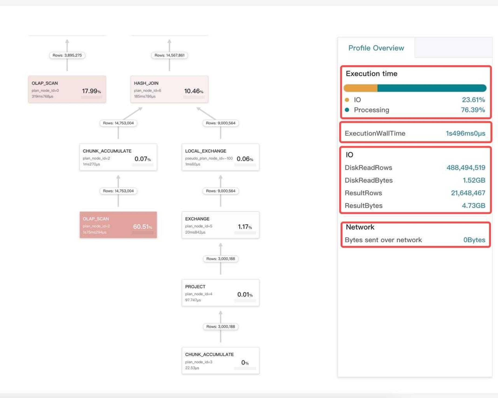
如上图所示，查询 Profile 是我们发现性能瓶颈点最常用的工具，从 Profile， 我们可以知道一个查询是慢在 plan 阶段，还是执行阶段，也能知道是哪个算子是执行瓶颈
3.2 StarRocks Observability : Optimizer Trace
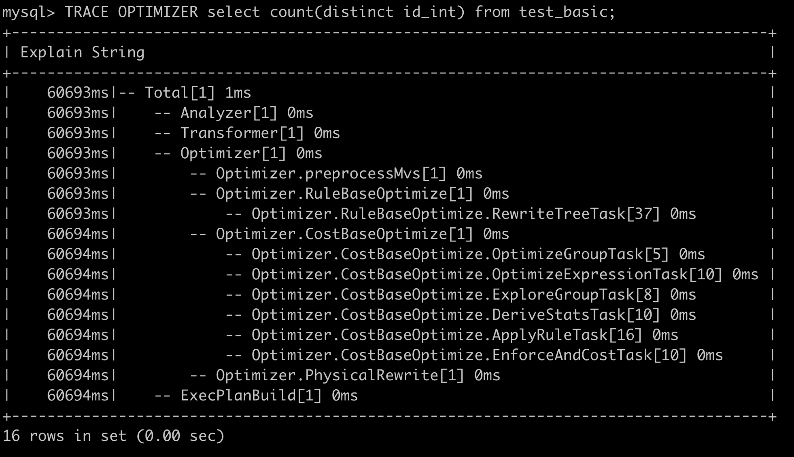
如上图所示，我们通过一个命令就可以知道 StarRocks 优化器到底慢在哪一个阶段，可以快速定位出优化器阶段的性能瓶颈。
3.3 StarRocks Observability : Executor Trace
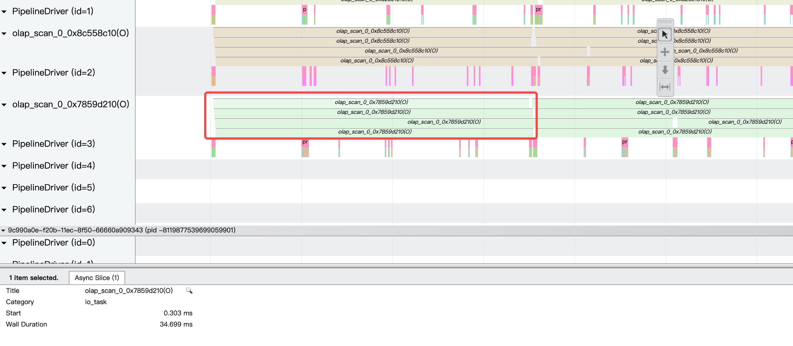
如上图所示，我们可以通过 StarRocks 的执行器的 trace 工具快速定位出执行层到底是慢在哪个点，比如是CPU的问题，IO的问题，还是调度框架的问题。
3.4 CPU Sampling —— Perf
除了数据库系统自身的工具，我们也可以使用 Linux 通用的性能 profile 工具，比如，最常见的性能 Profile 工具，Perf，可以通过火焰图看成 CPU 热点。 详情大家可以参考： https://www.brendangregg.com/perf.html
3.5 Off CPU Tracing —— eBPF
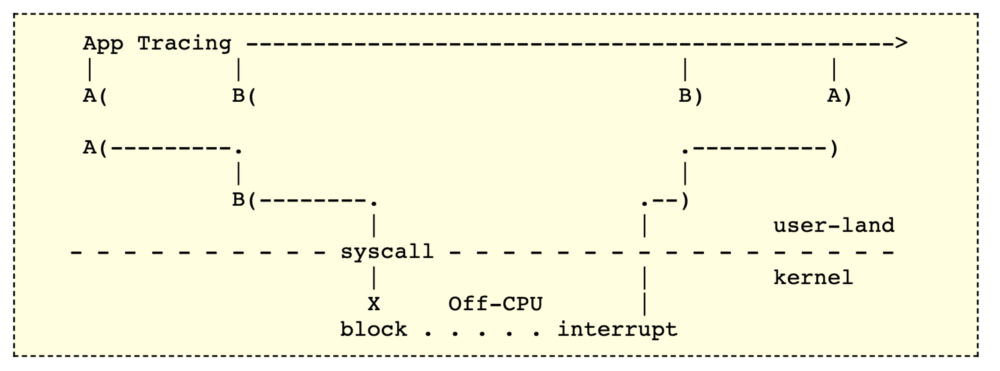
很多时候，性能的瓶颈并不是在 CPU 执行本身，而是在 IO，网络，Lock 上，这时候我们就需要进行 Off CPU 分析，而且这时候基于 Sampling 的性能工具往往没有效果，我们需要使用基于 Trace 的 性能工具，比如 eBPF。详情大家可以参考 https://www.brendangregg.com/offcpuanalysis.html
3.6 Intel 的 Top-down 分析方法
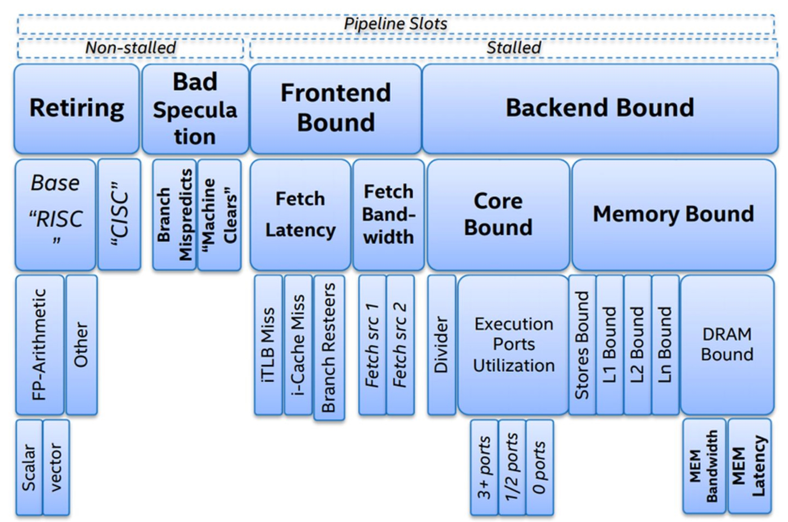
如上图所示，Intel 基于 CPU 执行的整个过程，提出了 《Top-down Microarchitecture Analysis Method》的 CPU 微架构性能分析方法，将 CPU 执行的可能瓶颈点分为4大类，然后每一类在不断细分，层层深入，定位到最具体的性能瓶颈点。
为了便于大家理解，我们可以将上图简化为下图（不完全准确）：
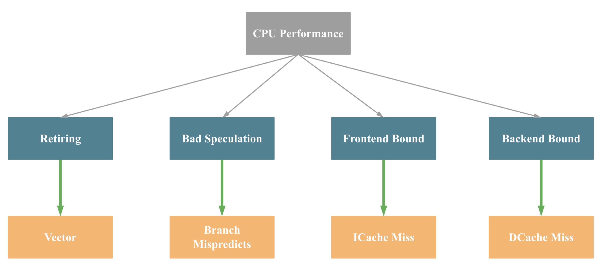
即影响一个 CPU 程序的性能瓶颈主要有4大点：Retiring、Bad Speculation、Frontend Bound 和 Backend Bound，4个瓶颈点导致的主要原因（不完全准确）依次是：缺乏 SIMD 指令优化，分支预测错误，指令 Cache Miss， 数据 Cache Miss。
3.7 Linux Performance tools
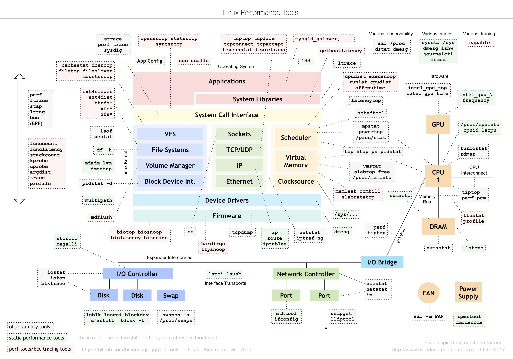
如上图所示，操作系统每个模块的问题都有对应的工具可以进行分析，大家在日常工作中就需要不断积累，清楚哪类问题可以用哪些工具解决，也要清楚每个重要工具可以解决哪些问题。
3.8 性能监控指标
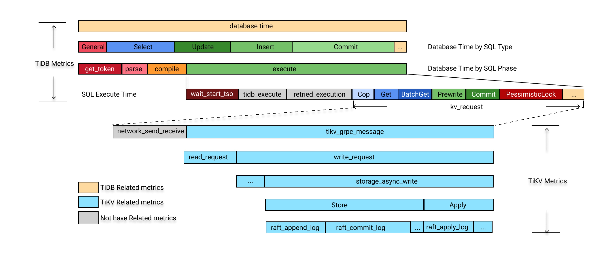
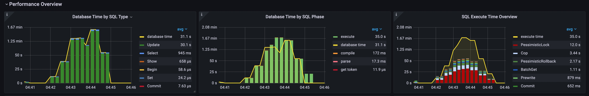
这一点上 TIDB 做的比较好，整个查询过程的关键性能指标都暴露出来，可以比较方便的分析某类问题的性能瓶颈，主要是对DBA，解决方案，普通用户更加友好。 详情可以参考 https://docs.pingcap.com/tidb/dev/performance-tuning-methods
3.9 优化器 Plan Test
SQL 是声明式，只告诉了 What，没有告诉 How, 所以一个 SQL 的执行路径可能成千上万，优化器选择出的最终 Plan 往往不是最优的，我们研发有时候也不能判断哪种执行计划是最优的。 主要是两个原因： 1是执行计划很多，人很难枚举，2是执行计划的真实执行性能是和执行器每个算子的性能，集群规模，数据特点，硬件资源等都有关系。 所以我们需要有专门的优化器 Plan 测试工具去枚举测试 不同执行计划的真实性能，从而发现更优的执行计划。
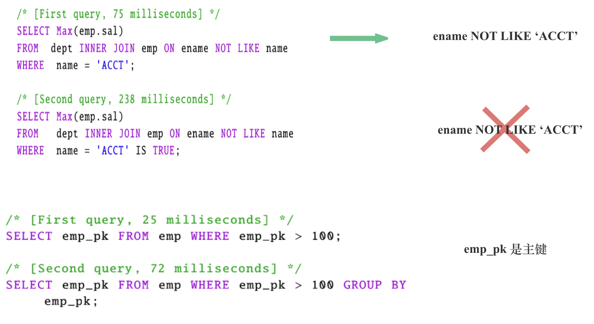
如上图所示，上面两个SQL 等价，但是很多数据库的对于第二个SQL 却无法推断出 ename not like 'ACCT' 这个谓词, 导致有3倍的性能差距。
下面两个 SQL，如果有 emp_pk 是主键的信息，group by emp_pk 也可以直接优化掉，性能就可以提升3倍。
4 如何进行查询性能优化
4.1 CPU 通用性能优化
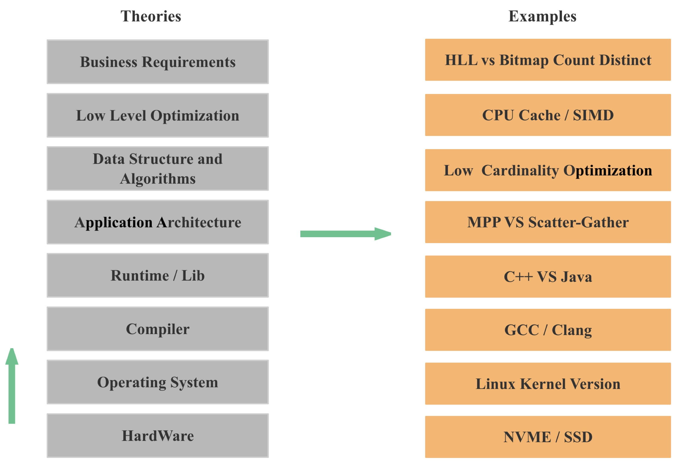
如上图所示，数据库也是一个大型的 CPU 应用，所以我们可以先按照所有 CPU 应用的通用优化思路去优化数据库的查询性能，比如自底向上我们依次可以从这些点进行优化：
- 硬件：首先是直接替换硬件，比如从机械硬盘替换为 NVME，SSB，另一方面，为了充分发挥新硬件的性能优势，我们往往需要在系统架构，数据结构和算法层面针对新硬件进行优化
- 操作系统： 操作系统的内核升级往往会给我们带来大量新功能和性能优化，比如 io_uring 异步 IO 接口
- 编译器：编译器持续在优化性能，往往低版本不能自动向量化的代码，在高版本就可以自动向量化了
- 编程语言和第三方库：首先是编程语言本身的性能差距，其次是在同样的编程语言下，也有大量的性能优化技巧，这个我之后会专门再写篇文章
- 应用的架构：应用的架构会直接影响可扩展性，对性能的影响会很大，比如 MPP VS Scatter-Gather
- 数据结构和算法：不同的数据结构和算法往往会有量级的性能差距，这个大家都深有体会，比如 hashtable, 这个数据结构，工业界几十年一直在持续优化。
- Low Level的优化：比如 SIMD 和 CPU Cache
- 业务逻辑的优化：比如从精确去重变为近似去重，比如数据建模的优化
4.2 DataBase Pre Process VS Runtime Process

这一点我在 如何打造一款极速分析型数据库：预计算 VS 现场计算 已经解释的比较清楚。
4.3 DataBase High Level Optimization
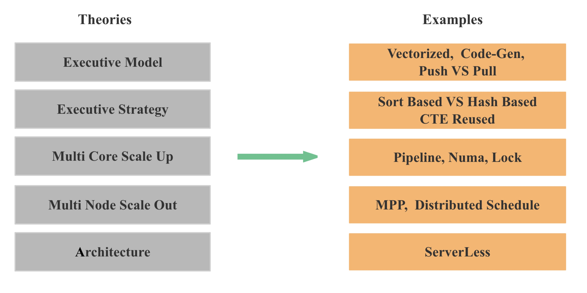
具体到数据库层面的优化，我们可以分为 High Level 和 Low Level 的两大类优化。 High Level 的优化主要包括：
- 架构：比如是存储分离还是存算一体，比如 ServerLess，比如是分布式 Cache 还是 Local Cache
- 多机 Scale Out 的能力 ：查询能不能充分利用多机的资源，查询性能 能不能随着节点 Scale Out 成比例提升
- 多核 Scale Up 的能力：查询能不能充分利用多核的资源，查询性能 能不能随着核数 Scale Up 成比例提升
- 执行策略：比如聚合，Join 是 Sort Based，还是 Hash Based，比如 CTE Reused，比如聚合下推
- 执行模型：比如是否支持向量化，是否支持 Code gen，是Push 还是 Pull 等
4.4 DataBase Low Level Optimization
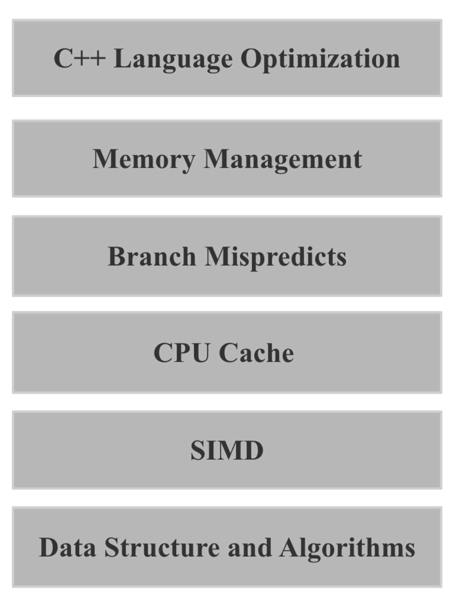
这一点大家可以参考我之前在 StarRocks 技术内幕：向量化编程精髓 的分享，之后的每一个点我也会在 OLAP 性能优化指南 详细展开描述
4.5 从资源的角度进行优化
性能优化的本质就是优化各种系统资源的使用。我们针对查询优化的各种手段，其实本质上都是在优化 CPU, 内存，IO，网络等系统资源的使用:
- 存储层的 Read Data Less And Fast 其实是在优化 IO 资源
- 计算层的 Transfer Data Less And Fast 其实是在优化网络资源
- 计算层的 Process Data Less And Fast 其实是在优化 CPU 和 内存资源
如果我们解决一个问题的算法复杂度相同，那么谁的实现更优，就是看谁做的无用功更少，使用的系统资源更少。
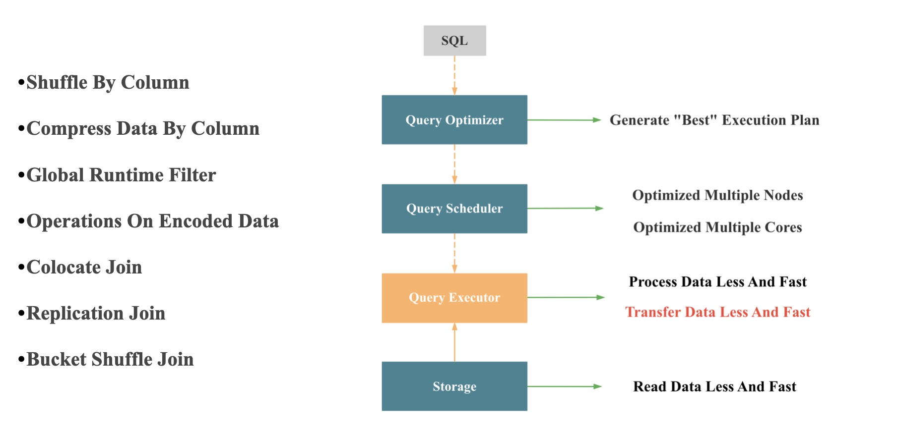
上图就是一个查询执行层优化网络的各种优化手段的示例。
5 如何做好性能测试
- 对比测试：硬件环境，数据，建模等基础信息对齐 (出过很多次问题)
- 不同硬件 (核数多少，磁盘介质，出过多次问题)
- 不能只关注单并发，还要关注高并发
- 不能只关注延迟和吞吐，还要关注资源利用率
- 不能只关注 AVG，还要关注PT99和抖动
- 不能只关注目标场景，各种典型 Workload 的查询都要测试
- 细致，周密，敏锐，自动化，标准化
6 CPU 架构下的数据库性能优化有尽头吗？
答案是 性能优化永无止境 ，因为
- 硬件在持续变化：底层硬件的变动可能直接导致上层软件的架构革新或者是数据结构和算法层面的革新
- 数据库架构在持续变化：架构的变化会可能导致我们的执行策略，执行模型，优化重点都发生变化
- 更多的上下文，更多的优化策略：只要有更多的上下文，更多的信息，我们就可以实现针对性的优化
- 数据结构和算法层面的创新：数据结构和算法层面的创新是永远不会停止的，一个简单的 Hash 表 工业界都从来没有停止优化
- 执行策略层面的创新：比如 CTE 复用，聚合下推，各类 Runtime Filter
- From Manually To Adaptive：在未来，我们必然会向用户屏蔽掉各种配置，各种 Session 变量，而每去掉一个配置，就可能意味着我们会多一种自适应执行的策略
7 生产环境的性能 VS Benchmark 的性能
很多时候，我们的性能测试都是在标准环境进行，都尽可能屏蔽噪音，但是在生产环境，要想取得在 Benchmark 中的性能数据，我们可能还要再付出10倍不止的精力：
- 大查询影响小查询
- 导入，查询，Compaction，统计信息等任务相互影响
- 并发控制 & 查询排队
- 查询超时 & Retry
- PT99, Not Avg
- 慢节点
- 数据倾斜
在生产环境中，上面的每一个问题都不是很好解决，都是一个大型的优化项目。
8 性能优化的权衡
在考虑要不要进行一个性能优化时，我们还需要从下面几点进行权衡：
- 代码复杂度
- 兼容性
- 稳定性
- 优化的投入产出比
- 优化的通用性
- 性能的可预测性
我们永远都要有这样一个意识：
- 不是所有的需求都要满足
- 不是所有的Bug都要修复
- 不是所有的优化都要实现
9 OLAP 数据库性能优化的未来
1 Serverless 架构下面向成本的性能优化：
参考 如何打造一款极速分析型数据库：ServerLess 之极致弹性 要想在 Serverless 架构下取得很好的性能，我们的整个架构，执行框架，算法实现上就不能单点和串行，必须保证每个S QL 都可以随着节点数增多性能可以获得成比例提升，其次，我们也必须解决数据倾斜问题，否则，就无法充分利用整个集群的资源。
2 真实业务场景的自适应执行优化：
基于不同的数据分布，数据技术，数据基数，数据相关性，优化器很难保证任何时候都产生比较好的plan，所以自适应执行的优化不可避免，可以参考 数据库之美 —— 查询自适应执行
3 真实历史数据的 AI 优化
- 在批处理场景下，我们可以基于历史运行任务的信息去进行 History Base 的优化
- 我们可以根据用户真实执行SQL的各种指标数据，结合机器学习，进行自动推荐物化视图，自动 clusting，优化执行计划等等
10 如何成长为数据库性能优化专家
- CPU & 内存 & 网络 & IO 的专业知识 (原理，性能指标，性能工具)
- 数据库领域的专业知识
- 性能测试的工具和方法论
- 数据库领域各种优化思路，
- 关注学术和工业界的进展
- 关注新硬件，新架构
- 目标系统原理，源码的深刻理解和掌握
性能优化是一门工程，实践出真知，大家还是多动手，多尝试，多积累经验。也欢迎大家专注 OLAP 性能优化指南 ，给个 Star，我会持续完善更新，也欢迎大家共建。
欢迎体验 免费 极速 无需翻墙的 ChatGPT
欢迎来知识星球和我交流